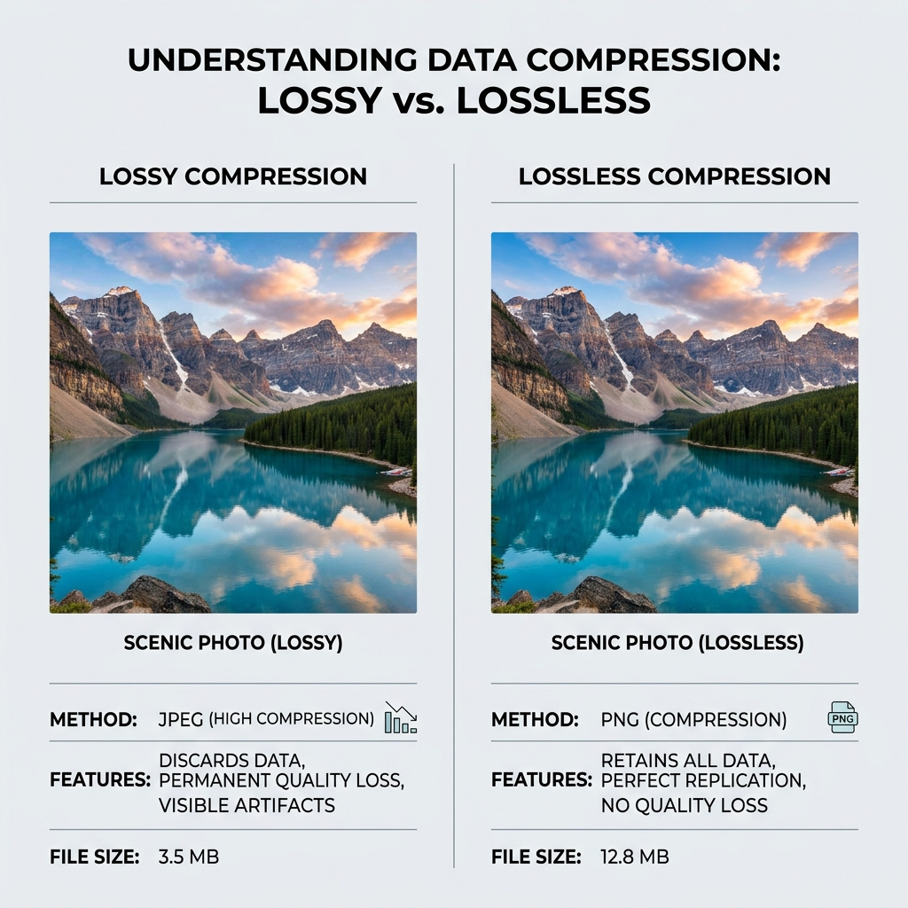
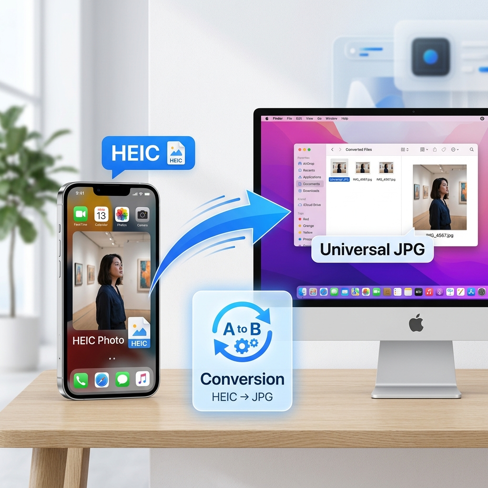
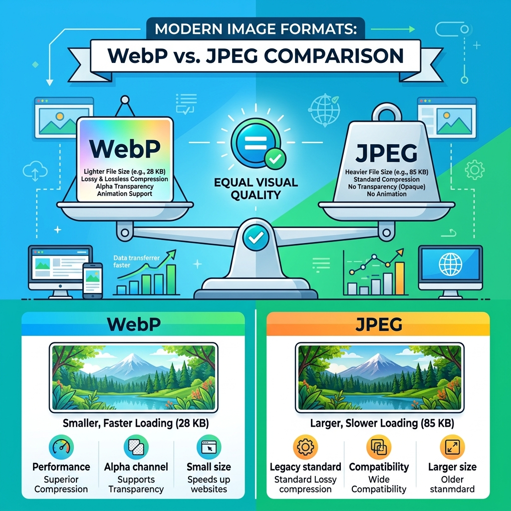

Blog & Recursos
Dicas essenciais sobre SEO, velocidade de carregamento e privacidade digital para profissionais.
Como a Compressão de Imagens Melhora o SEO e a Velocidade do seu Site
O tempo de carregamento de uma página web é um fator crítico para o sucesso online. O Google utiliza os Core Web Vitals para classificar sites, e as imagens pesadas são o principal inimigo do desempenho...
Ler artigo completoJPEG, PNG, WebP ou AVIF: Qual o Melhor Formato de Imagem?
Escolher a extensão correta para as suas fotografias pode ser confuso. A conversão de formato de imagem é o primeiro passo para um site profissional. O formato JPEG é clássico e excelente para fotografias...
Ler artigo completoO Guia Prático para Redimensionar Imagens para Redes Sociais e Impressão
Cada plataforma digital tem as suas próprias regras. Fazer o upload de uma imagem com o tamanho errado resulta num recorte automático desastroso ou numa compressão que destrói a nitidez...
Ler artigo completoPrivacidade Online: Porque Deve Remover os Dados EXIF das suas Fotos
Sempre que tira uma fotografia com o telemóvel, a câmara guarda metadados invisíveis a olho nu. Estes dados, conhecidos como metadados EXIF, incluem a marca do dispositivo, a hora exata da captura...
Ler artigo completoArtigo 5
Descubra o AVIF, o formato de imagem que está a revolucionar a performance web...
Ler artigo completoArtigo 6
Entenda os riscos dos metadados escondidos nas suas fotos...
Ler artigo completo
Artigo 7
Saiba quando utilizar cada tipo de compressão...
Ler artigo completoArtigo 8
Aprenda a otimizar as fotos dos seus produtos...
Ler artigo completo
Artigo 9
O formato HEIC é excelente para poupar espaço no iPhone...
Ler artigo completo
Artigo 10
Confrontamos o formato clássico com o padrão moderno...
Ler artigo completoArtigo 11
Entenda como as proporções das suas imagens afetam a experiência do utilizador...
Ler artigo completoArtigo 12
Descubra a diferença entre imagens de píxeis e vetores...
Ler artigo completoArtigo 13
Aprenda a técnica de carregamento diferido que acelera o seu site...
Ler artigo completoArtigo 14
As imagens não são apenas visuais; elas são dados...
Ler artigo completo